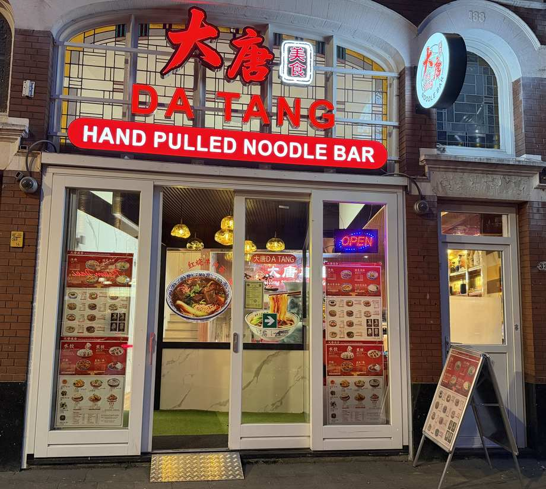
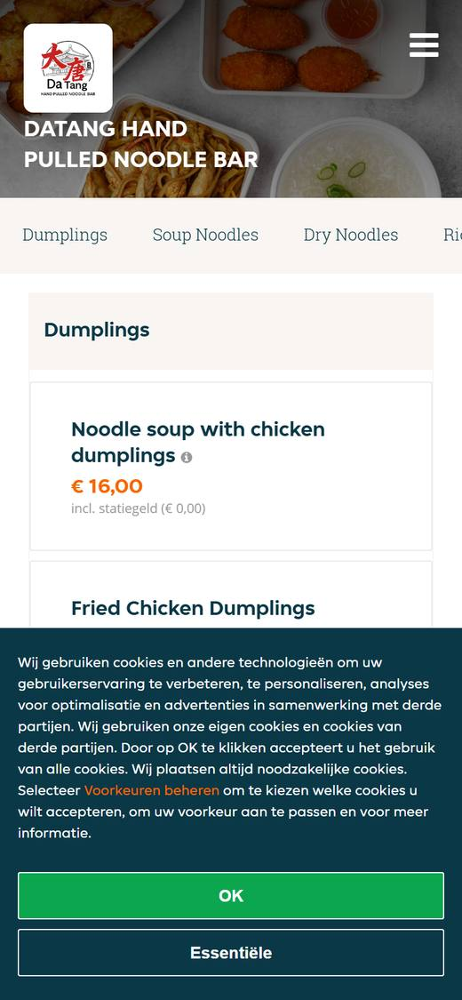
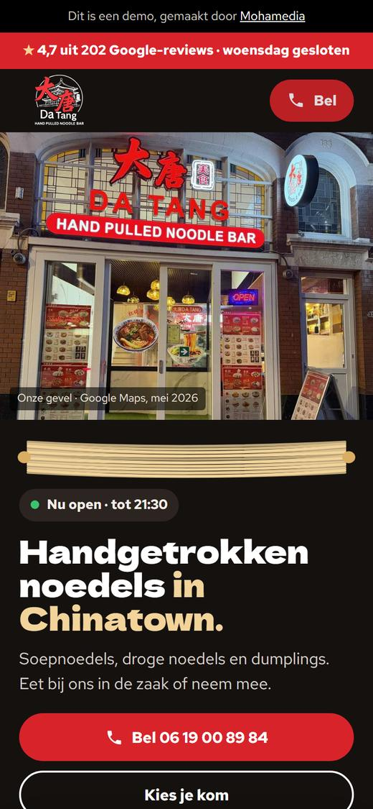

Echt met de hand
Klanten schrijven over echte handgemaakte noedels en dumplings. De bereiding zie je vaak gewoon achter de toonbank.
★ 4,7 uit 202 Google-reviews · woensdag gesloten

Soepnoedels, droge noedels en dumplings. Eet bij ons in de zaak of neem mee.
4,7 ★ · 202 reviews op Google West-Kruiskade 32-B, Rotterdam
De kaart
Onze noedels komen in een kom bouillon of droog. Daarnaast dumplings, bijgerechten, Chinese hamburger en Chinese crêpes. Prijzen zoals op onze online bestelkaart.
De bouillon is van kip en rund.
Gerechtnamen zoals op onze kaart. Bier alleen vanaf 18 jaar.
Kies je kom
Tik aan wat je wilt eten en wanneer je komt. Je keuze staat daarna op het hoesje: handig als je belt of binnenloopt.
Nog niets gekozen.
Liever thuis? Bezorgen gaat via Thuisbezorgd.
Waarom DaTang
Drie dingen die gasten in hun reviews op Google over ons schrijven.
Klanten schrijven over echte handgemaakte noedels en dumplings. De bereiding zie je vaak gewoon achter de toonbank.
Klanten noemen de porties groot en de prijs goed. Soepnoedels staan op onze kaart vanaf € 11,50.
Klanten schrijven over attent personeel en een vriendelijke eigenaar. En op reviews reageren we zelf.
Gasten over DaTang
Noemt de noedels ongelooflijk lekker, de prijs heel betaalbaar, de porties groot en het personeel attent.
AnnaNoemt DaTang door en door Rotterdams Chinees, en geweldig.
SanderSchrijft dat de eigenaar vriendelijk is.
MinhSamengevat uit reviews op Google, niet letterlijk geciteerd.
Zo eet je bij ons
Soepnoedels, droge noedels of dumplings: alles staat op de kaart hierboven.
Bel 06 19 00 89 84 of kom langs aan de West-Kruiskade 32-B.
Eet in de zaak of haal af. Bezorgen gaat via Thuisbezorgd.
Vóór je komt
Nee, op woensdag zijn we gesloten. De andere zes dagen zijn we open vanaf 11:30.
Ja, afhalen kan.
Bezorgen gaat via Thuisbezorgd, van 11:30 tot 21:00. Op woensdag niet.
De bouillon van de soepnoedels is van kip en rund.
Dumplings, rijst- en noedelgerechten, bijgerechten, soep met vlees, Chinese hamburger, Chinese crêpes, en dranken en bier.
West-Kruiskade 32-B, 3014 AS Rotterdam.
Langskomen
West-Kruiskade 32-B
3014 AS Rotterdam
Tijden van de zaak volgens Google Maps. Bezorgen via Thuisbezorgd: 11:30–21:00, woensdag niet.
Bel even of loop binnen aan de West-Kruiskade. Open vanaf 11:30, behalve op woensdag.


Ook: Google Maps toont nu geen website ("Website toevoegen"); deze site kan daar straks staan. Nog niet in de demo: eigen foto's van de noedels en het trekken achter de toonbank. Zit 06 19 00 89 84 op WhatsApp, dan zetten we de WhatsApp-knop aan.